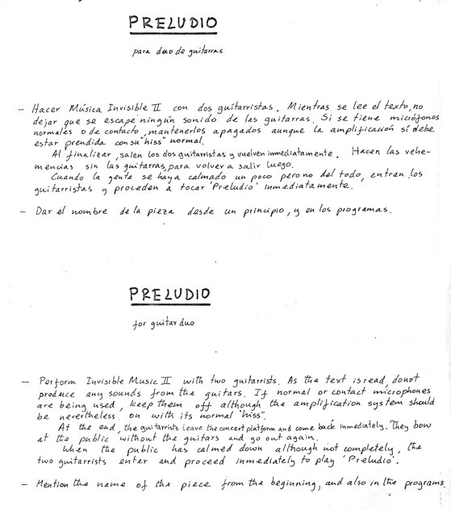
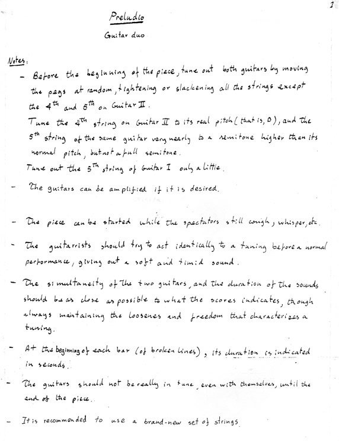
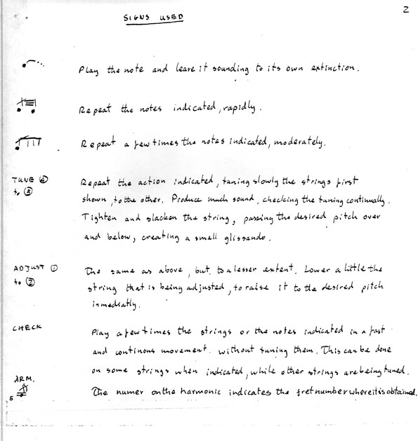
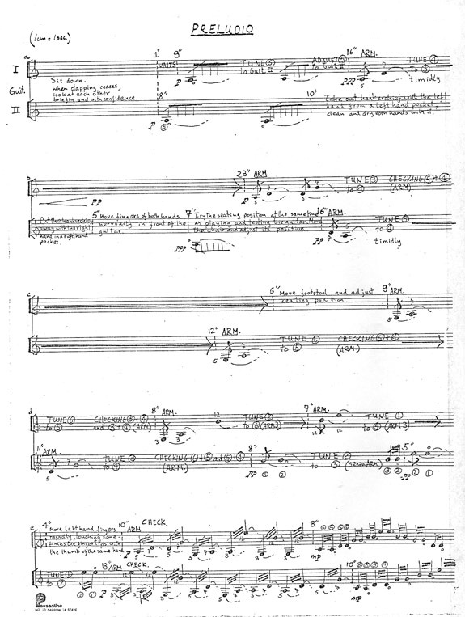
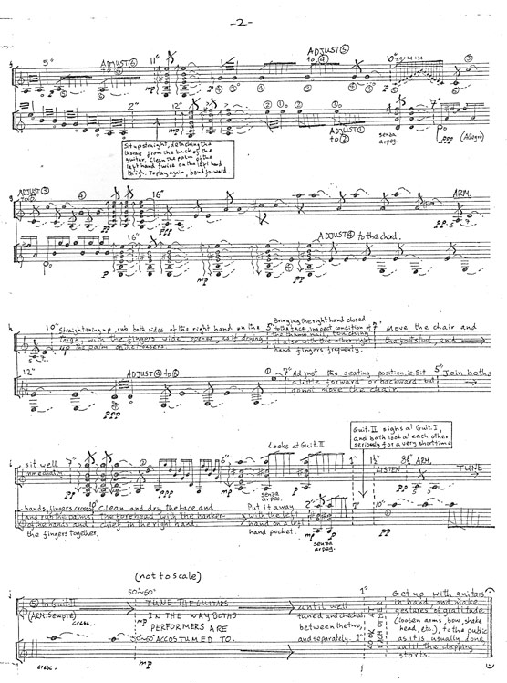

La
Caja de Juguetes
Preludio
Emilio
Mendoza
Chiste para dos guitarristas desafinados
Dos Guitarristas-actores
1976 / 5'
Ejecuciones
- Curso Latinoamericano de
Música Contemporánea, São João del Rei, Brasil, ejecutada
por el autor y otro ejecutante, 01/1978.
- 32º Hauptarbeitstagung del
Institut für Neue Musik und Musikerziehung, Darmstadt,
ejecutada por Ramón Ramos y el autor, 20/03/1978.
- Conciertos de la Sociedad
Uruguaya de Música Contemporánea, Montevideo, 1979-80.
- Curso Latinoamericano de
Música Contemporánea, Santiago de los Caballeros,
República Dominicana, ejecutada el autor y otro
ejecutante, 01/1981.
Preludio es un chiste para público y dos
guitarristas, aunque se puede hacer otra versión para
cualquier dúo de instrumentos iguales o diferentes. Incluye
actuación y sentido del manejo del público en escena para
hacer la pieza dentro de la duración idónea para que el
público se ría o se agite.
Esta pieza se puede combinar con Música Invisible II, primero, y luego Preludio de segunda.
Referencias
Oltra García,
Héctor. (2013). “Biografía, Catalogación de Obra y
Aproximación al Lenguaje Musical del Compositor Valenciano
D. Vicente Ramón Ramos Villanueva (1954 – 2012).”Tesis de
Maestría. Universidad Politécnica de Valencia, Valencia,
España. Director de tesis: Juan Cerveró. Pag. 36, 37.
Oltra García, Héctor. (2019). LA EXPRESIÓN ESTRUCTURADA.
Trayectoria vital y creativa del compositor valenciano
Ramón Ramos Villanueva (1954-2012).
Valencia:
EdictOràlia Llibres i Publicacions, ISBN: 978‐84‐945465‐8‐7.
Explicada brevemente, la primera pieza Música Invisible II es
una lectura en voz alta de un análisis fastidioso y complicado
que se hace con los músicos en el escenario listos para tocar,
pero que al final de la lectura de la nota del programa, se
van del escenario y se concluye la pieza sin música, sólo la
lectura del análisis (ver Música
Invisible II). Luego de los aplausos, salen al
escenario los dos guitarristas de nuevo para tocar Preludio, se acomodan las
sillas los banquitos, pañuelito, sudor, etc, recursos de
movimientos de nerviosismo típicos de guitarristas con
inseguridad, y empiezan a afinar como en cualquier concierto
de estos instrumentos, sólo que un guitarrista le da la nota
falsa al otro. Cada uno por su cuenta afina, con recursos
típicos de afinación como probar pedazos de piezas, arreglar
la silla, arreglarse el pelo, etc, y luego se dan el visto
bueno. Al dar un acorde juntos se dan cuenta de que están
desafinados completamente y se asombran con caras de temor.
Aquí el público empieza a burlarse o a reírse de la
incompetencia del dúo, con su crueldad tradicional tipo
coliseo, y el dúo con cara de perdidos, afinan rápidamente de
nuevo pero con la nota correcta. Cuando estén afinados, con
ciertos gestos positivos y de éxito, y listos para tocar, el
público usualmente aquí hace silencio esperando la pieza del
concierto, pero el dúo se levanta y hacen los gestos de saludo
y gracias al público, doblándose hacia adelante los dos y
marchándose fuera del escenario, con risas o pitos del público
quien ha sido defraudado de nuevo y no escuchó la pieza porque
pensó que estaban simplemente afinando y la filtraron.




